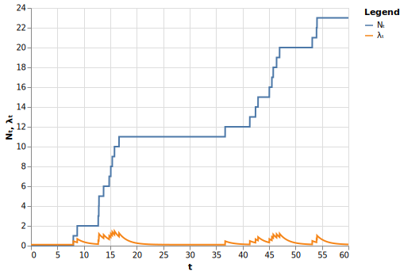

Recently, a link between the SIR compartmental epidemic model and Hawkes-like processes was found. This opens up the possibility to use some of the rich theory related to Hawkes processes when analyzing spreads of diseases using the SIR model. As the SIR model is not capable of modeling latent periods – a feature inherent in many diseases including Covid-19 – there is a need to extend the recently found link to more complex compartmental epidemic models such as the SEIR model. We have discovered this link and present it briefly in this blog post. For a detailed derivation of our results and a more in-depth discussion please refer to
Since their introduction in the 1970s, Hawkes processes have been successfully applied in many different fields,
including seismology, finance, and information science. Alan G. Hawkes also considered his class of stochastic
processes "a possible epidemic model in large populations"
However, a model assuming an infinitely large population is often not suitable when modeling the spread of diseases. That is why many researchers preferred compartmental epidemic models (such as the SIR or SEIR model) to Hawkes processes.
Only recently, it has been shown that there is a link between Hawkes-like processes and the SIR compartmental
model. As Rizoiu et al. put it, "[t]his is significant, as it indicates that tools developed for one approach can
be applied to the other."
We have discovered a link between the SEIR model and Hawkes-like processes.
But before we dive into the theory, let's get a feel of the models we will talk about. The following plot shows four subplots, each containing the total number of infections (y-axis) that occured until a certain day (x-axis) in a population of 10 thousand people using one specific simulation model. When you hover over the bars, you will notice that many infection counts are not integers; that is because they are calculated as the mean of many simulations. Experiment with the sliders below the plot and see how they affect the spread of a disease.
Comparing the subplots, we notice three things:
Note: The two subplots on the left look similar. This is a consequence of the finding of Rizoiu et al. that we mentioned above: There is a link between the SIR model and Hawkes-like processes.
Note: The two subplots on the right look similar. This is a consequence of our finding: There is a link between the SEIR model and Hawkes-like processes.
Important: The subplots on the
left and on the right are very different! Also note, that you can adjust the latency in the models
plotted on the right (higher values for $\sigma$ implying less latency). The models on the left, however, are not
capable of modeling latency
A Hawkes process is a type of counting process. A counting process counts events. These events can, for example, be infections (in epidemiology) or earthquakes (in seismology). Whenever an event occurs, the counting process experiences a jump of size $1$. Let's have a look at a sample path of a Hawkes process $N_t$ in the following figure (the blue line).

You will notice that its jumps are not evenly distributed over the observed time interval $[0, 60]$. Why is that?
It's because the behavior of $N_t$ is dictated by its so-called conditional intensity $\lambda_t$ (the orange line). Whenever $\lambda_t$ is high we have a high probability of events. A low $\lambda_t$, on the other hand, leads to fewer jumps in $N_t$. This property is valid for all counting processes.
What makes Hawkes processes so special is that their conditional intensity $\lambda_t$ again depends on the counting process. In the figure above we see that the jumps in $N_t$ also increase the conditional intensity.
In general, the conditional intensity of a Hawkes process has the form \begin{align} \lambda_t = \mu(t) + \sum\limits_{t_j < t} \nu(t-t_j) , \end{align} where $t_j$ is an event time and $\mu(t)$ as well as $\nu(t-t_j)$ are both $\geq 0$. We call $\mu(t)$ the background intensity. It is independent of $N_t$.
$\nu(t - t_j)$, on the other hand, depends on $t_j$ and thus on the history of the counting process $N_t$. We call $\nu$ the kernel of the Hawkes process.
In the figure above, $\mu(t) = \mu$ was constant and $\nu$ was an exponential kernel, this means \begin{align} \label{exphawkes} \lambda_t = \mu + \sum\limits_{t_j < t} \kappa \theta \text{e}^{-\theta (t - t_j)}. \end{align}
Here, $\kappa$ is called the scale parameter and $\theta$ is called the decay parameter. You may notice that this kernel equals the density of the exponential distribution with parameter $\theta$ scaled by the parameter $\kappa$.
Important: The exponential kernel leads to immediate jumps in $\lambda_t$ when an event occurs. When modeling infections, this means that an infection immediately increases the probability of further infections. This also means, that there is no way of taking a latent period into account.
We will address this issue below. But first, let's head to the other class of models we discuss in this post.
3Compartmental epidemic models (such as SIR and SEIR) model the spread of a disease within some population of size $N$ by dividing this population into groups (so-called compartments). In the SIR model these groups are called
Susceptibles are healthy. After becoming infected, they move to compartment I. After some time infected people recover from a disease and hence move to compartment R. The possible transitions between compartments are outlined in the following figure.
The exact laws that govern the rates at wich people transition from one compartment to the next can be expressed in various ways. In the so-called Continuous Time Markov Chain SIR (CTMC-SIR) model this is achieved via infinitesimal transition probabilities. These probabilities govern the three stochastic processes $S_t$, $I_t$ and $R_t$, which represent the number of people in the respective compartment at time $t$.
It turns out that it suffices to model only two of the three stochastic processes we have just defined. Furthermore, we can focus on counting processes. $R_t$ is a counting process, counting the recovery events. $C_t \coloneqq I_t + R_t$ is also a counting process, counting the infections that took place until time $t$. Using these two processes, we can always reconstruct the two processes $S_t = N - C_t$ and $I_t = C_t - R_t$.
According to Allen
\begin{align} p_{(c+1, r), (c, r)}(\Delta t) &= \beta \frac{S_t}{N} I_t \Delta t + o(\Delta t) \text{ and} \label{eq:p-infection}\\ p_{(c, r+1), (c, r)}(\Delta t) &= \gamma I_t \Delta t + o(\Delta t) \label{eq:p-recovery}\\ \label{eq:p-stay} \end{align} where $p_{(c+j, r+k), (c, r)}(\Delta t)$ is short hand for \begin{align}\label{eq:sir-p-abbrev} \mathbb{P}((C_{t+\Delta t}, R_{t+\Delta t}) = (c+j, r+k) | (C_t, R_t) = (c, r)). \end{align}
This means that the equations \eqref{eq:p-infection} and \eqref{eq:p-recovery} give the probabilities of an infection and a recovery within a short period of time, respectively. The probability that neither an infection nor a recovery happens within a period of length $\Delta t$ is $1 - p_{(c+1, r), (c, r)}(\Delta t) - p_{(c, r+1), (c, r)}(\Delta t)$.
As $C_t$ and $R_t$ are counting processes, they have a conditional intensity. According to
Aalen et al.
Having defined $S_t$, $I_t$ and $R_t$, we are now able to establish a link between the SIR model and Hawkes processes by finding similarities in their conditional intensities.
3.1.2How does a conditional intensity look like in the SIR model? This depends on which process in this model we are considering. As we are interested in infections we might be tempted to choose the process $I_t$. However, $I_t$ is not a counting process, so we cannot compute a conditional intensity. (A counting process counts and thus, it is monotonically increasing, but $I_t$ decreases when people transition from I to R.)
We can solve this issue by choosing the process $I_t + R_t$. This represents a counting process, which counts all infections that have occurred until time $t$. We have derived its conditional intensity $\lambda_t^{SIR} = \beta \frac{S_t}{N} I_t$ in the info box above.
Unfortunately, this result is not directly comparable to the conditional intensity of a Hawkes process. This is because a Hawkes process can only model infections, whereas the SIR model also contains recoveries as events. Therefore, Rizoiu et al. calculated an expected value, integrating over the recovery times, which are not observable in the Hawkes process. If we call the set of all recovery times $\mathcal{T}$, then the main result of Rizoiu et al. is \begin{align} \label{sirhawkesn} \mathbb{E}_{\mathcal{T}} \left( \lambda_t^{SIR} \right) = \left( 1 - \frac{I_t + R_t}{N} \right) \sum\limits_{t_j < t} \beta \text{e}^{-\gamma (t - t_j)}, \end{align} where $\beta$ and $\gamma$ are the parameters of the SIR model. (They also show up in the infinitesimal transition probabilities of the model as shown in the info box above.) $\beta$ is governing the rate at which infections take place, whereas $\gamma$ determines how fast people recover.
Now this looks pretty much like the conditional intensity of a Hawkes process with exponential kernel! To see this more easily, just set $\mu = 0$, \begin{align}\label{eq:translate-beta} \kappa \theta = \beta, \end{align} and \begin{align}\label{eq:translate-gamma} \theta = \gamma \end{align} in equation $\eqref{exphawkes}$ and compare it to $\eqref{sirhawkesn}$. Now the only difference is the factor in front of the sum!
To eliminate this last difference between the two models, Rizoiu et al. defined the HawkesN process. This process is defined by its conditional intensity, which is the same as that of a Hawkes process, but without the background intensity $\mu(t)$ and with the additional factor $(1-N_t/N)$, where $N_t$ denotes the HawkesN process at time $t$. So compared to a Hawkes process, the HawkesN process lacks the parameter $\mu(t)$, but features the additional parameter $N$, which can be interpreted as the population's size.
This additional factor in the conditional intensity – let's call it HawkesN factor – has an important effect. As is the case with the Hawkes process, infections tend to increase the conditional intensity of the HawkesN process. However, as the number of events rises, this increasing effect declines for the HawkesN process and eventually, further events can even have a decreasing effect, since the factor in front of the sum decreases.
With diseases we make similar observations. At first, infections increase the probability of further infections. However, as more and more people become infected, the number of susceptibles declines and this lowers the probability of further infections, as there are fewer people left who can become infected.
Note: Using the link found by Rizoiu et al. we can translate an SIR model easily into a HawkesN process and vice versa using the equations \eqref{eq:translate-beta} and \eqref{eq:translate-gamma}. This allows one, for example, to estimate model parameters in one model and then make predictions using the other model.
3.2The SEIR model is a generalization of the SIR model, adding a compartment between S and I. This compartment is called E, which stands for exposed. Members of this group are infected, but are not able to infect others yet. After some time, people move on to compartment I, which means that they become infectious. The states and possible transitions are summarized in the following figure.
The additional compartment allows for modeling a latent period – a key characteristic of many infectious diseases. The duration of the latent period – that is the time a person spends in compartment E – depends on the incubation rate $\sigma$. The lower the value of $\sigma$, the longer the latent period. You can see this effect in the interactive chart above; just move the slider for $\sigma$ and see what happens.
3.2.2We have found that the SEIR model also has a close relationship to the HawkesN process. However, for the expectation of the conditional intensity $\lambda_t^{SEIR}$ to match that of a HawkesN process, the kernel of the HawkesN process must not be the exponential kernel, but rather the hypoexponential kernel or the Erlang kernel. The conditional intensity with a hypoexponential kernel looks like \begin{align} \lambda_t = \left( 1 - \frac{N_t}{N} \right) \sum_{t_j < t} \kappa \frac{\theta \sigma}{\theta - \sigma} \left( \text{e}^{-\sigma (t-t_j)} - \text{e}^{-\theta (t-t_j)} \right), \end{align} where everything that follows the scale parameter $\kappa$ is the density of a hypoexponential distribution.
You may notice that in case of $\sigma = \theta$ this formula does not work, as we would divide by zero. We have shown that in this case the link between SEIR and HawkesN is established with the Erlang kernel, which leads to the conditional intensity \begin{align} \lambda_t = \left( 1 - \frac{N_t}{N} \right) \sum_{t_j < t} \kappa \theta^2 (t-t_j) \text{e}^{-\theta (t-t_j)} . \end{align}
How do these formulas differ from the conditional intensity with an exponential kernel? Have a look at the following chart. You can select a sequence of event times below the chart and the plot will update accordingly.
We can see that a high value of the parameter $\sigma$ leads to a conditional intensity that resembles that with an exponential kernel. That is because the hypoexponential kernel converges to the exponential one – a property inherited from the densities of the hypoexponential and the exponential distribution: \begin{align} \lim_{\sigma \to \infty} \frac{\theta \sigma}{\theta - \sigma} \left( \text{e}^{-\sigma (t-t_j)} - \text{e}^{-\theta (t-t_j)} \right) = \theta \text{e}^{-\theta (t - t_j)}. \end{align}
The same relationship exists between the SEIR model and the SIR model. When $\sigma$ goes to infinity, the time spent in compartment E goes to zero, thus eliminating the need for this compartment.
Now, let's have a look at smaller values of $\sigma$. They lead to a large delay with which the conditional intensity increases. In the SEIR model a lower $\sigma$ means that people spend more time in compartment E where they are not yet able to infect others. Thus, an infection does not immediately increase the probability of further infections but only does so with some delay.
If we select the event sequence $\{0, 1, 2, \ldots, 9\}$ below the chart, we can see that the conditional intensity drops to zero at $t=9$. This is because in this example we assumed a population of only ten people. At $t=9$, the $10^{\text{th}}$ event occurs, so the HawkesN factor in the conditional intensity becomes $(1 - 10 / 10) = 0$.
In an S(E)IR model, this $10^{\text{th}}$ infection event has the same effect. As soon as everybody left the group of susceptibles, there is nobody left who can get infected.
The event sequence with ten events nicely reflects how infections can have an increasing effect on the conditional intensity at first. However, we can also see that the last two events decrease $\lambda_t$ – just as discussed above when we defined the HawkesN factor. Note that this decreasing effect eventually prevails irrespective of the kernel function used.
Note: The link between the SEIR model and HawkesN processes can be used in the same way as the link found by Rizoiu et al., which means that the equations \eqref{eq:translate-beta} and \eqref{eq:translate-gamma} remain valid.
4In this blog post we have briefly presented the link between the SEIR model and Hawkes processes, which can be seen as a generalization of Rizoiu et al.'s work. This means, that now this link can be used when modeling diseases that feature a latent period, during which infected people are not infectious.
This, however, does not imply that the SEIR model is suitable for every disease and one has to keep in mind that the latent period is not necessarily the same as the incubation period. This distinction is crucial for many diseases (e.g., Covid-19) and can complicate the the application of the SEIR model.
Nonetheless, even in the case of Covid-19 there are works showing the application of the SEIR model. To this end, sometimes the model is adapted. One such adjustment can be the incorporation of quarantine measures.
Further generalizations of the link between SEIR and HawkesN are possible and we will continue our research on this topic in order to offer tools related to Hawkes-processes to a wider range of compartmental epidemic models.
Some text describing who did what.
Some text with links describing who reviewed the article.